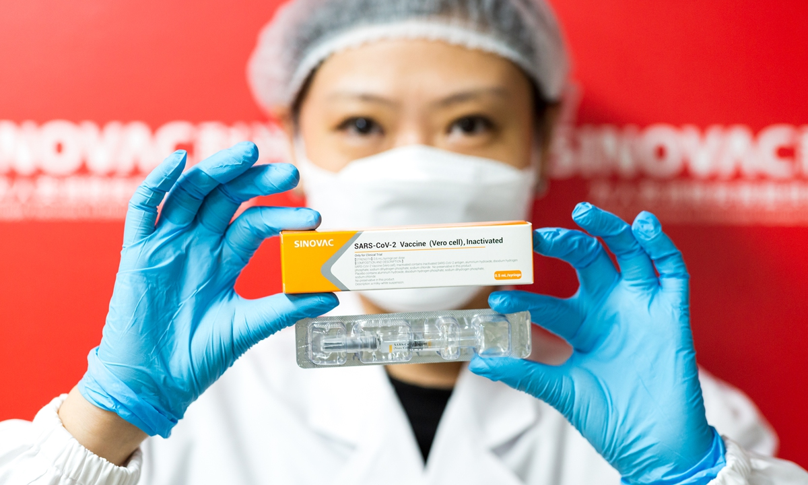
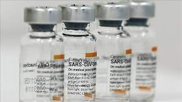

Sinovac Vaccine

What is Sinovac vaccine
The private Chinese company Sinovac developed a coronavirus vaccine called CoronaVac. The vaccine is approved for use in China and authorized for emergency use in more than a dozen other countries.
Researchers in Turkey and Brazil found the vaccine has an efficacy of 83.5 percent against Covid-19 infections with one or more symptoms, or just over 50 percent against infections with or without symptoms.
MORE INFORMATIONWhere is Sinovac vaccine?
With the unprecedented morbidity and mortality associated with the COVID-19 pandemic, a vaccine against COVID-19 is urgently needed. We investigated CoronaVac (Sinovac Life Sciences, Beijing, China), an inactivated vaccine candidate against COVID-19, containing inactivated severe acute respiratory syndrome coronavirus 2 (SARS-CoV-2), for its safety, tolerability and immunogenicity.
As of April, 200 million doses of CoronaVac have been delivered and an estimated over 100 million doses had been administered worldwide.
- In March, Bosnia received a donation of 30,000 doses from Turkey.
- Singapore has signed advance purchase agreements for CoronaVac. In February, the first doses arrived in the country.
- In March, Fiji said it would be receiving a donation of CoronaVac.
How does the Sinovac vaccine work?
It works by using killed viral particles to expose the body's immune system to the virus without risking a serious disease response. By comparison the Moderna and Pfizer vaccines being developed in the West are mRNA vaccines. This means part of the coronavirus' genetic code is injected into the body, triggering the body to begin making viral proteins, but not the whole virus, which is enough to train the immune system to attack.
MORE INFORMATION